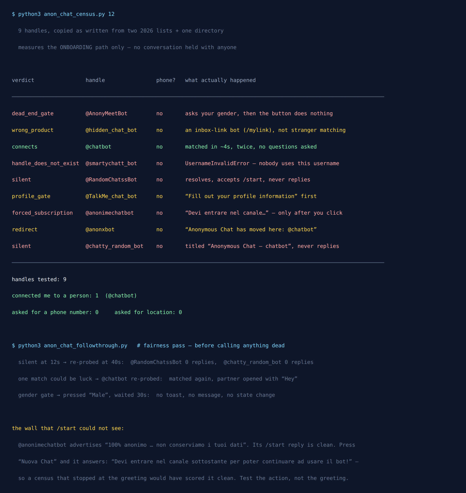

9 Telegram Anonymous Chat Bots Tested: Only 1 Connected
An anonymous chat bot makes a very simple promise: press start, and in a moment you will be talking to a stranger who does not know who you are.
It is a promise that is unusually easy to check, and unusually rarely checked. Every “best anonymous chat bots” list I could find on 9 September 2026 describes what each bot is for. Not one of them shows what happens when you actually press start.
So I pressed start on all nine of them.
One connected me to a person. The other eight failed in eight genuinely different ways, and the differences turned out to be more interesting than the number.

The set, and why it is not a cherry-pick
Choosing nine bots that fail is easy and worthless. So the set was fixed before anything was measured, taken from other people’s recommendations, and every handle was copied exactly as written by its source:
- Seven handles from a “top Telegram bots for chatting” list published for 2026:
@AnonyMeetBot,@hidden_chat_bot,@chatbot,@smartychatt_bot,@RandomChatssBot,@TalkMe_chat_bot,@anonimechatbot. - One handle from a general Telegram bot directory —
@anonxbot. - One handle from a 2026 random-chat round-up —
@chatty_random_bot.
That “exactly as written” matters more than it sounds. Several lists name a brand and link to a website rather than giving a Telegram handle, and it is very tempting to infer the handle from the brand. I refused to. A handle I guessed wrong would come back as this bot does not exist, and I would have published a live service as dead. Every name below is one a source actually printed.
What I measured, and the line I did not cross
These bots connect you to a real human being. That puts a hard limit on what an automated test is allowed to do, and the limit shaped the whole design.
I measured the onboarding path only: does the handle resolve, what does the bot demand before it will do anything, and does it actually place you in a matching queue. Wherever a match could occur I sent /stop immediately. No conversation was held with anybody. Twice a stranger got a word in before my /stop landed. One opened with “M”, one with “Hey”, and both times I disconnected without replying, which is a slightly rude thing to do to a person and the only defensible thing to do in a test.
So this article cannot tell you whether the people on the other side are pleasant, or whether a bot has an active user base at 3am. It can tell you, precisely, what stands between you and that first hello.
Result 1: one bot works, and it works in four seconds
@chatbot, plainly named “Anonymous Chat”, is the only one of the nine that did what all nine advertise. The entire interaction:
Looking for a partner…
Partner found 😺
/next — find a new partner
/stop — stop this chat
About four seconds, start to stranger. No gender question, no age question, no profile, no channel to join, no phone number. I ran it a second time to be sure a single match was not luck, and it matched again just as fast, with the other person opening first.
That speed is worth sitting with, because it reframes every other result on this page. The eight failures are not evidence that anonymous matching is hard to build. It is evidently not hard: one working service does it instantly, for free, with no questions. The failures are evidence that the lists are not checked.
Result 2: the bot search engines send you to never gets past its own first question
@AnonyMeetBot is the one I most expected to work. It has a polished welcome, its own launch page, and it is the handle people search for by name.
It opens by asking your gender — three buttons, Male, Female, Non-Binary. Fair enough; plenty of matching services want that.
Then you press one, and nothing happens.
No confirmation. No next question. No error. Not even the little grey toast Telegram shows when a bot acknowledges a button press. I pressed Male and waited eight seconds, then repeated the whole flow with a deliberately generous 30-second window in case the server was merely slow. Same result: the bot re-sent its welcome and asked my gender again.
So the bot is not dead — it answers /start instantly and renders a working keyboard. It simply never processes the answer to its own only question. A user hits a polite, well-designed, completely closed door, and would reasonably conclude they did something wrong.
Result 3: two bots that resolve, accept your message, and are not there
@RandomChatssBot and @chatty_random_bot both open normally. They have names (“Random Chatss bot”, “Anonymous Chat — chatbot”) and profiles, and they accept /start without complaint.
Neither has ever said a word to me. Not at a 12-second wait, and not at the 40-second re-test I ran specifically because “silent” is a claim that deserves a second chance. Silence at 12 seconds might be a slow server; silence at 40 is a switched-off one.
This is the failure mode that looks healthiest from the outside, and it is structural rather than accidental: a bot username stays registered with Telegram long after the program behind it stops running. Telegram will resolve the handle, show you a normal profile, and deliver your message into nothing. Every list that has ever recommended these two still recommends them, because from a list-writer’s desk they look fine.
Note the second name, though: “Anonymous Chat — chatbot”. That is the display name of a dead bot echoing the one bot on this page that works.
Result 4: the wall that /start cannot see
This is the finding that changed how I will run every test like this in future.
@anonimechatbot greets you in Italian with an unusually confident privacy pitch: 100% anonymous chat with other anonymous users, we do not keep your data or your conversations, we have existed since 2018 and we take confidentiality very seriously.
My first pass scored it clean. Its /start reply is clean: a welcome, a rulebook link, a menu. Nothing to object to.
Then I pressed the button that actually starts a chat:
📣 Devi entrare nel canale sottostante per poter continuare ad usare il bot!
(You must join the channel below to continue using the bot.)
A forced channel subscription — the thing you join so somebody’s promotional channel gains a member, sitting one click behind a privacy promise, and completely invisible to any test that stops at the greeting. My own first classifier had marked this bot as unremarkable for exactly that reason.
The rule I took away, and the reason this section exists: test the action, not the greeting. A bot’s welcome message is marketing copy it wrote about itself. The demand it makes when you finally ask it to do its job is the only part that describes the product.
Result 5: three of the nine entries are really one service
Line up the results and something odd appears. @anonxbot, listed in a bot directory as a working anonymous chat service, replies only with this:
🌎 Anonymous Chat has moved here: @chatbot
It is a forwarding sign. And @chatty_random_bot, as noted, is a silent bot whose display name is “Anonymous Chat — chatbot”.
So of nine recommended entries, three point at, or imitate, a single underlying service, the one that works. The apparent variety of the anonymous-chat bot market is partly an illusion produced by lists copying each other. If you had tried the first three names you found and all three had been these, you would have concluded the category was broken, when in fact you had been handed one address written three ways.
And one entry, @smartychatt_bot, is not an address at all. Telegram’s answer is UsernameInvalidError: nobody is using this username. A 2026 list is recommending a handle you cannot even open.
The thing I expected to find, and did not
I built this test around a suspicion. I assumed at least one “anonymous” bot would ask for a phone number, because that is the sharpest possible contradiction and I wanted to catch it.
Telegram makes such a demand precisely detectable. The Bot API defines a keyboard button field request_contact, documented as: “If True, the user’s phone number will be sent as a contact when the button is pressed. Available in private chats only.” (official Bot API reference). Its sibling request_location does the same for your position. Because those are typed API fields rather than words in a message, a bot cannot disguise the request, and it cannot take either silently, since both require a deliberate tap.
My classifier watched for both. Zero of the nine used either. Not one asked for a phone number. Not one asked for a location.
I am reporting that as prominently as the failures, because a test that only publishes the results it hoped for is not a test. On the specific axis I was most suspicious about, this category came out clean. The anonymity problem here is not data harvesting through the front door. It is that eight of nine bots never work at all, and one of them quietly bills your channel membership as the price of entry.
So what does “anonymous” actually mean here?
It means anonymous to the stranger, and that is a real and useful thing. The person you are matched with sees a relayed message and nothing else.
It does not mean anonymous to the operator. Telegram’s own Bot Platform Developer Terms are explicit about the arrangement: these third-party applications “are hosted on their developers’ own servers, and are third-party services that Telegram allows to have a presence in Telegram apps.” Telegram is providing the doorway, not vouching for the room. Whoever runs the bot receives every message you send through it, on hardware you know nothing about, under a privacy policy you have not read. And in one case here, a policy asserting “we do not keep your data” sat one click in front of a demand that you join a marketing channel.
So what can the operator see about you, as opposed to what your chat partner sees? I measured that separately, and the answer surprised me: anonymous Telegram bots can see your username, whatever the bot chooses to show the other side.
Want a group chat that cannot go silent on you?
The Telegram Party Pack is 255 group-chat game prompts that run on nothing but the chat you already have. No bot to add, no handle to verify, nothing that can quietly stop existing next spring.
Get the pack — $9.99 Or start with the free party games list.All nine, in one table
| Handle | Result | What actually happens |
|---|---|---|
@chatbot | Connects | Matched in ~4 seconds on both attempts. No profile, no gender, no channel, no phone. |
@AnonyMeetBot | Dead-end gate | Asks your gender; pressing an answer produces no reply, no toast and no state change, even after 30 seconds. |
@anonimechatbot | Channel wall | Clean greeting, then demands you join a channel the moment you ask for a chat. Italian only. |
@RandomChatssBot | Silent | Resolves and accepts /start. No reply at 12 seconds or at 40. |
@chatty_random_bot | Silent | Same, and its display name imitates @chatbot. |
@smartychatt_bot | Does not exist | UsernameInvalidError — the handle cannot be opened at all. |
@TalkMe_chat_bot | Profile first | Opens with “Fill out your profile information” plus language and gender selectors before anything else. |
@anonxbot | Redirect | Replies only that Anonymous Chat “has moved here: @chatbot”. |
@hidden_chat_bot | Different product | Mints an anonymous inbox link to share (/mylink). It does not match strangers — the list mis-filed it. |
On that last row: @hidden_chat_bot is not broken and I am not criticising it. It does its own job fine. It is simply the anonymous message link model, where people send you messages, rather than the random-stranger model. A list recommended it for “talking to strangers”, which is a category error, and it is the second-most common way these round-ups mislead you after recommending dead handles.
If you just want one that works
Use @chatbot, and know three things going in.
- Check the handle character by character. The single most valuable habit in this category. One dead bot on this page is already wearing a display name that mimics this one, and imitation handles are the cheapest attack in the entire Telegram ecosystem.
- Assume the operator logs everything. Not because this particular bot has done anything wrong, but because it runs on somebody’s private server and that is simply how the platform works. Send nothing through a relay you would mind seeing attached to your account.
- Never join a channel to unlock a “free” bot. The join demand tells you the bot’s real business is audience-building, and the chat is the bait. There is at least one service doing the same job with no wall at all.
The pattern underneath all of this
This is the fourth time I have run this exercise in the same corner of Telegram, after anonymous message apps, quiz bots and download bots. The shape of the result has never once changed: a set of confidently recommended handles, a small minority that do the advertised thing, and at least one entry that no longer exists in any form.
The cause is structural rather than dishonest. Naming a Telegram bot costs nothing; keeping one running costs money and attention every month. Lists get written once and republished forever, and the recommendation outlives the service by years. Nobody who profits from the list has any reason to go back and press start.
Which is the whole argument for doing it yourself, and it takes about ninety seconds. Open the handle. If it does not answer, it is dead. Wait a full minute before believing it is merely slow. If it answers, ask it to actually do the thing before you decide it works, because the greeting is the one part guaranteed to be pleasant.
Tested 9 September 2026. Every verdict here was computed from the message objects Telegram returned, and the raw replies were kept so the verdicts could be recomputed without messaging anybody a second time, which is exactly what happened when my first pass filed three quite different failures under one careless label.